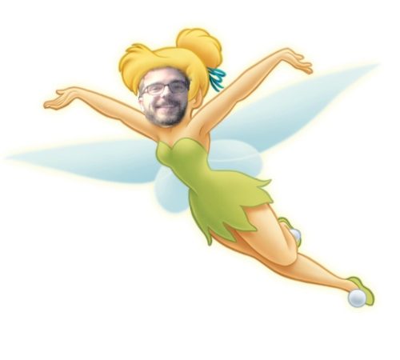
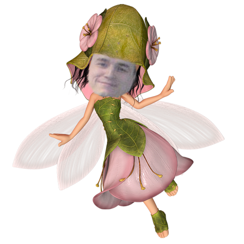
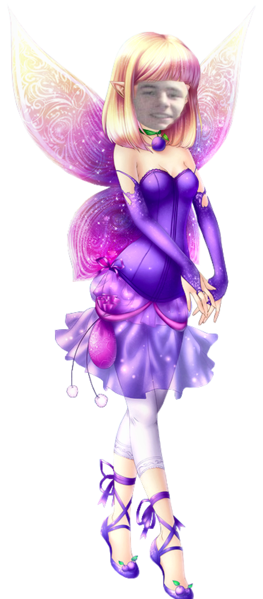
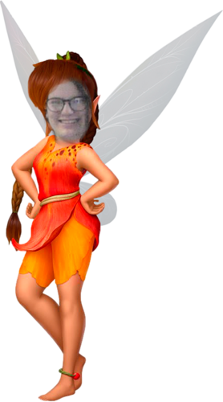
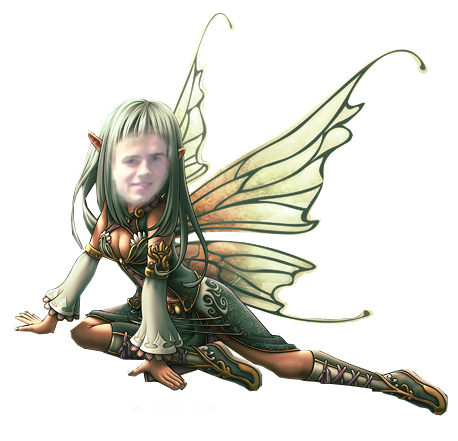

Définition : D'un point de vue éthymologique, « émotion » signifie faire sortir (movere) vers l'extérieur (e). Il s'agit d'un mouvement de libération des tensions. L’émotion est une expérience psychophysiologique et intense de l’état d’esprit d’un individu (animal, personne).
scroll down     Qu'est-ce que c'est ?
Interpretation philosophique
Manifestation physique
Eléments déclancheurs
Qu'est-ce que c'est ?
A quoi sa sert ?
Manifestation physique
Tristesse ou colère ?
Eléments déclancheurs
Qu'est-ce que c'est ?
Manifestation physique
Eléments déclancheurs
Comment se battre contre
Pousée à l'extreme : les phobies
Qu'est-ce que c'est ?
Interpretation philosophique
Manifestation physique
Eléments déclancheurs
Interpretation et gestion
Comment s'opposes les émotions
Comment elles cohabites
Gestion des émotions
Traduction
Darwinisme
Points de vue des philosophes
Quelques exeptions
Réponse D, la réponse D.
Room : MDSB1